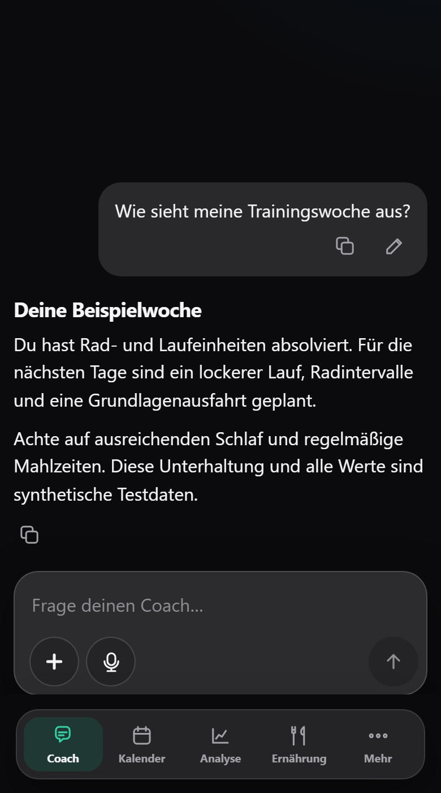
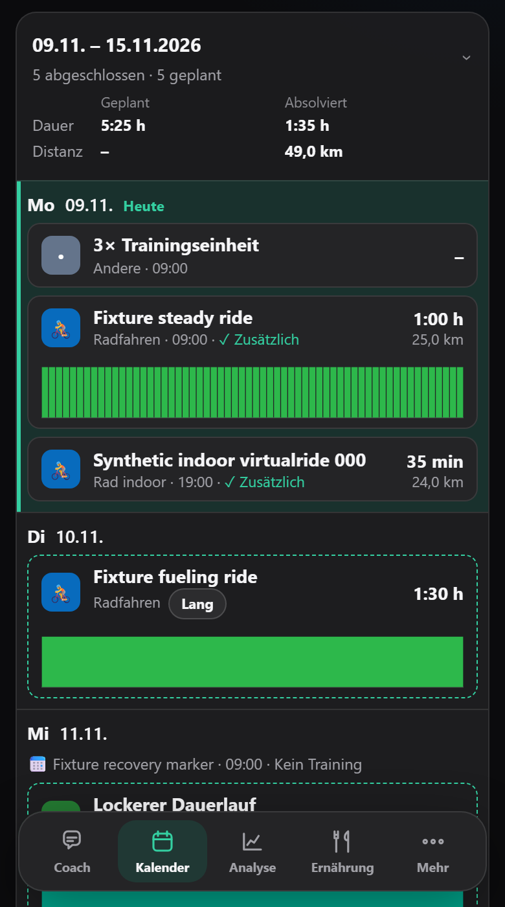
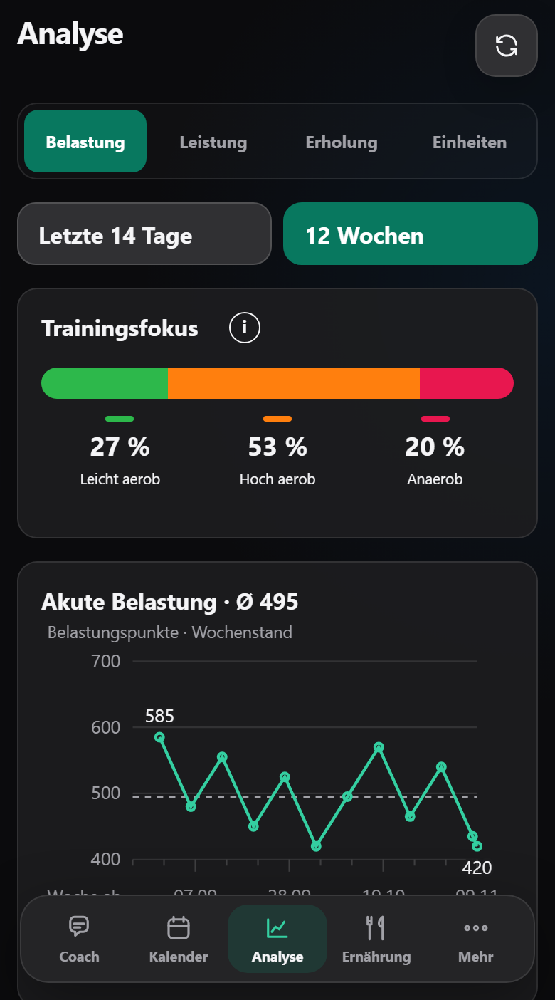
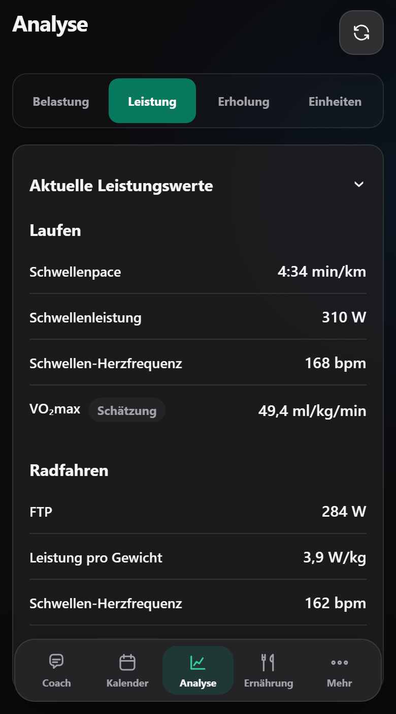
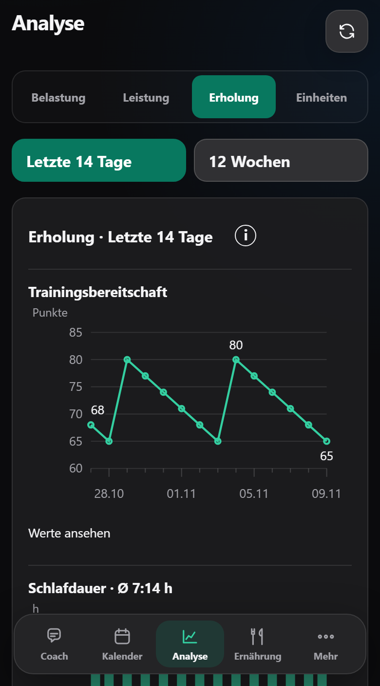
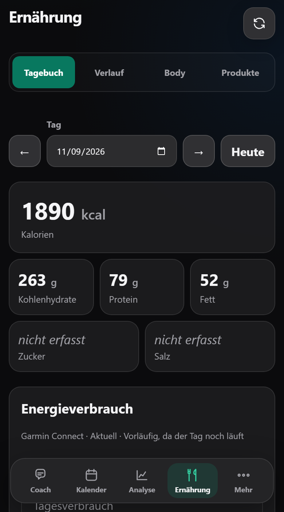

Chat that knows your week
Ask in plain language, by voice, or with photos and files. Every change the coach makes comes with a receipt and an undo.
Self-hosted · one athlete
A private training app for running, cycling and strength. It reads your Garmin and Wahoo data, keeps everything in an encrypted local database, and coaches you in a chat that knows your calendar, load and recovery.


One place for the plan, the sessions behind it and the conversation about both.
Ask in plain language, by voice, or with photos and files. Every change the coach makes comes with a receipt and an undo.
Plan running, cycling and strength. Replanning changes future sessions only after you approve a preview.
Fitness, fatigue and form, current thresholds, sleep and HRV trends, and every session down to full-resolution charts.
Eight local performance methods, each with an evidence card that lists its limits and sources.
Structured strength workouts with named exercises, sent to your Garmin watch when you ask.
Local food databases, saved meals and products, and your Garmin energy use next to what you ate.
Weather, air quality, pollen and your private calendar shape what the coach plans.
A workout recorded by several devices becomes one session. Values are labelled Garmin, Wahoo, derived or AI estimate.
An installable, offline-capable web app, built for the phone first. Five areas: Coach, Calendar, Analysis, Nutrition, More.




Screenshots show the standard synthetic demo data, not a real athlete. The app interface is currently German.
Training data comes from Garmin and Wahoo. Plans and history live in your database. Nothing leaves it unless you ask.
Activities, sleep, HRV, daily health and thresholds are read and bundled into one session per workout.
An encrypted local database holds sessions, plans, check-ins and conversations. The coach and all analysis work from it.
Workouts go to Intervals.icu on request and from there to Garmin and Zwift. Strength workouts go straight to the Garmin watch.
| Garmin | InActivities, details, sleep, HRV, daily health, thresholds. Official Personal API key, optional login for the rest. |
|---|---|
| Wahoo | InActivities and FIT files, cycling FTP, weight. |
| Intervals.icu | OutWorkouts, competitions, nutrition and thresholds, only on explicit synchronization. Never read. |
| OpenAI | CoachResponses API, or a compatible endpoint you configure. The key stays on the server. |
| Open-Meteo, DWD, ICS | InWeather, air quality, pollen and calendar constraints. |
One container, one data folder. You need Docker and a password of at least 12 characters; it is also the database key.
docker rm -v.mkdir -p data && chown -R 100:101 data
docker run -d --name pacecraft \
--restart unless-stopped \
--read-only --cap-drop=ALL \
--security-opt no-new-privileges:true \
-p 8090:8090 -v "$PWD/data:/data" \
--env-file ./.env -e TZ=Europe/Berlin \
ghcr.io/lukas-beike/pacecraft:latest